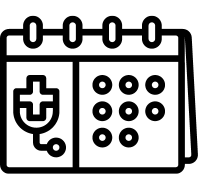
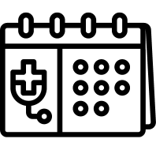

Cabinet conventionné secteur 1
Cabinet d'ophtalmologie, à Houilles
- Ophtao -
Dr Mégret et associés
Cabinet d'ophtalmologie, à Houilles
- Ophtao -
Dr Mégret et associés
Cet environnement virtuel a été conçu pour répondre à vos questions à propos de votre santé visuelle. Nous présentons ici notre équipe, et les modalités de contact. Vous trouverez des informations détaillées sur nos services et notre équipe spécialisée en ophtalmologie, ainsi que des ressources pour comprendre votre santé oculaire. N'hésitez pas à explorer nos sections, à utiliser les fonctionnalités de ce site et à nous contacter si besoin.
Cordialement,
Dr. Olivier MEGRET

Notre adresse
Contactez-nous
Horaires d'ouverture
Lundi : 9h - 13h / 14h - 18h
Mardi : 9h - 13h / 13h30 - 18h
Mercredi : 8h30 - 15h30
Jeudi : 9h - 13h / 14h - 18h15
Vendredi : 9h - 16h45
Samedi : 9h - 13h30
 
Consultation Ophtalmologique
Pédiatrie
Rendez-vous Médical
Diabétique
Lentille
Urgences

Consultation Ophtalmologique
Pédiatrie
Rendez-vous Médical
Diabétique
Lentille
Urgences


 Glaucome
Cataracte
DMLA
Dystrophies Héréditaires de la Rétine
Uvéite
Rétinopathie diabétique
Glaucome
Cataracte
DMLA
Dystrophies Héréditaires de la Rétine
Uvéite
Rétinopathie diabétique